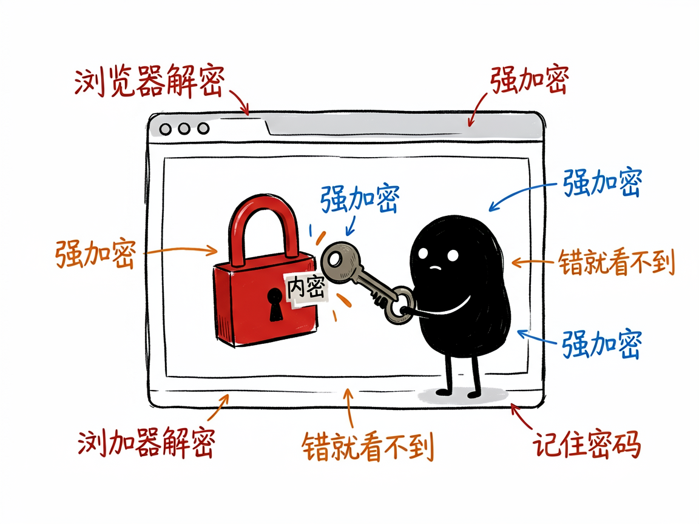

想给网页加个密码锁、只有知道密码的人能看？它把 HTML 加密成自解密页面 —— staticshield 介绍
你做了个网页——也许是份内部资料、一封电子请柬、一个只在小圈子里传的页面——你不想谁都能随便打开，但又没有服务器、不会搭登录系统。普通的"网页加密"要么要后端，要么形同虚设。
staticshield 就是来解决这件事的。
它把一个 HTML 网页加密成一个"自带解锁页"的文件：别人打开它，看到一个输入密码的框，输对密码才能在浏览器里当场解密、看到原内容；密码错就啥也看不到。你给它一个网页和密码，它还你一个能直接丢到任意静态托管（GitHub Pages、网盘、CDN，甚至本地双击）上、靠密码保护的安全页面。

它到底能做什么
- 单文件加密：把一篇 HTML 加密码变成自包含的解锁页，不依赖任何后端服务器。
- 整站打包加密：一个文件夹（HTML + CSS/JS/图片）可以"内联"成单文件再加密，或批量加密成一包 ZIP。
- 强加密：用 AES-256-CBC（一种业界标准的加密算法）配合 PBKDF2 密钥派生，密码够强就够安全。
- 自动生成强密码：自己想不出密码时，它可以帮你随机生成一串够长的密码。
- 贴心小功能：可加"记住我"、密码提示、自定义解锁页 logo，甚至生成一个把密码藏在链接里的分享 URL。

一个具体例子
# 加密单个文件，并自动生成 16 位强密码
node encrypt.js index.html --gen-pwd 16 -d ./dist
# 把整个网站目录打包加密成一包
node encrypt.js ./mysite --bundle -p "你的密码" -d ./dist
# 想要网页界面来操作也行
node encrypt.js --gui
-d ./dist 指定输出到哪个目录；--bundle 表示把多文件站点合并加密。
谁适合用
- 想分享敏感/私密网页内容、但不想搭服务器的人。
- 做内部资料、活动页面，需要简单密码保护的小团队。
- 做 AI 工具、要把"网页加密"做成能力的人。
一点说明 / 小提示
它是一个"AI 技能 / 命令行工具"，最顺手的是在带它的 AI 助手里说"帮我把这个网页加密"，它来跑命令告诉你密码。解密发生在浏览器里，所以打开时需要 https 或本地环境（直接双击 file:// 也行）。务必记住：密码一旦生成就无法找回，它也不会替你存——丢了就只能重新加密。它保护的是"内容不被随便看到"，不等于能防住决心破解的人，密码强度很关键。具体能力以项目文档为准。